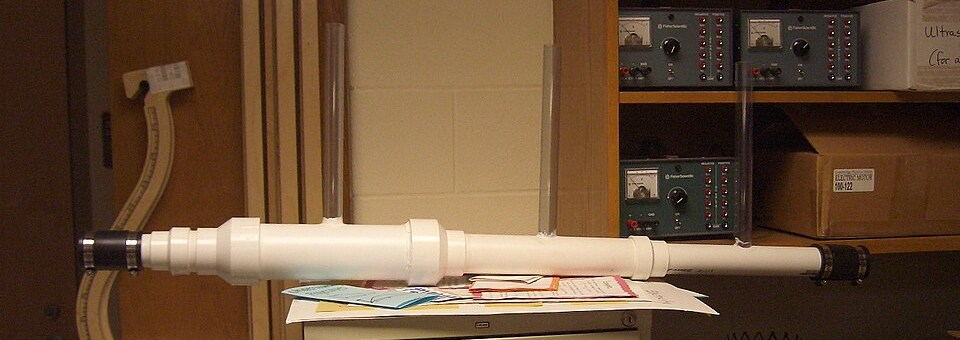

Angostar un caño para medir cuánta agua pasa: continuidad más Bernoulli
¿Cómo se mide cuánta agua pasa por un caño sin cortarlo ni poner una rueda adentro? Una manera elegante es angostar el caño un poco y medir cuánto baja la presión en la parte angosta. Ese dispositivo es el tubo de Venturi, y combina dos ideas que ya conocemos: la ecuación de continuidad y el teorema de Bernoulli.
Un Venturi tiene tres partes: una sección que se angosta, una garganta de diámetro constante y una sección que vuelve a ensancharse [1]. Por continuidad, el caudal es el mismo en todas partes, así que el fluido va más rápido en la garganta, donde el área es menor [2]. Y por Bernoulli, donde va más rápido la presión es menor [2]. Midiendo la diferencia de presión entre la parte ancha y la garganta se puede calcular el caudal [1].

La hoja de problemas de hidráulica de John Fenton resuelve un Venturi horizontal en un caño de 15 cm de diámetro con una garganta de 10 cm, por el que circula aceite de densidad 900 kg/m³. Con una diferencia de presión de 20 kPa entre las dos secciones, el caudal resulta de 56,8 litros por segundo [1]. Fenton usa un coeficiente de corrección de 1,06 para tener en cuenta que la velocidad no es igual en toda la sección [1].
El embudo de gente: a la salida de un recital, la multitud camina tranquila por la calle ancha y acelera al pasar por una puerta angosta. Si midieras qué tan apretada está la gente antes de la puerta y en la puerta, podrías calcular cuántas personas por minuto salen. El Venturi hace eso con un fluido: la caída de presión en la garganta dice cuánto fluido pasa.
La misma idea, la baja presión en un chorro rápido, tiene muchas aplicaciones. OpenStax llama arrastre a este efecto: un fluido rápido, con baja presión, hace que la presión más alta de afuera empuje otro fluido hacia adentro del chorro [2]. Así funcionan el mechero de Bunsen, que arrastra el aire necesario para la combustión, el atomizador de perfume, los pulverizadores de pintura, los carburadores y los aspiradores de agua de laboratorio [2]. OpenStax cuenta que dispositivos de este tipo se usan desde la Antigüedad para levantar agua y drenar terrenos bajos [2].
Una explicación muy difundida dice que la parte de arriba de un ala funciona como medio Venturi: el aire se «aprieta» al pasar por la curva, acelera, y la presión baja. La NASA la clasifica entre las teorías incorrectas de la sustentación [3]. Un ala no es una tobera: no hay ninguna pared de arriba que forme la otra mitad del caño, y lejos del ala la velocidad baja hasta la del aire libre, al revés de lo que pasa en el centro de una tobera [3]. Además, esa teoría no puede explicar por qué vuela una placa plana, que no forma ningún estrechamiento, ni por qué la forma de la cara de abajo del ala también importa [3]. Cómo vuela de verdad un ala está en sustentación y circulación.
Por qué se ensancha al final: la sección que vuelve a ensancharse frena el fluido despacio y le devuelve parte de la presión. Si el caño se ensanchara de golpe, el flujo se despegaría de las paredes, se formarían remolinos y se perdería más energía (un razonamiento a partir de la separación de la capa límite).
El tubo de Venturi es Bernoulli puesto a trabajar: angosta el caño, el fluido acelera, la presión baja, y esa caída mide el caudal. El mismo efecto, la baja presión de un chorro rápido, permite arrastrar otros fluidos en atomizadores y carburadores. Lo que no hace es explicar el vuelo de un ala.
Pregunta para la comunidad: Si en el Venturi de Fenton la diferencia de presión se cuadruplicara, ¿cuánto aumentaría el caudal? Pista: la diferencia de presión depende del cuadrado de la velocidad.